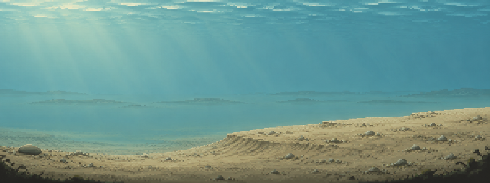

M03 / ROUND 01 / TERRAIN ONLY
芦苇沙洲 · 第一轮历史构图
用户已选 A，查看第二轮植物群落。以下保留选定前的比较记录。
本轮只做地势、水色与大构图。芦苇群落在选定方案后制作；当前两稿都没有植物和装饰动物。

两套完整构图


推荐 B：宽缓沙洲更能区别于 M01 岩棚、M02 树根；后续可在右侧聚集芦苇，保留左中部清晰水道。A 沙纹仍有条带感，B 沙洲边缘仍偏平直，植物轮需用不等长沉积斑与局部侵蚀口打破规则感。
概念图不是真实地形、碰撞图或可玩地图；两稿均尚未验证实机鱼线与 QTE 可读性。
本轮报告 · 内置 image_gen 提示词 · 系列进度 · M02 分层交接